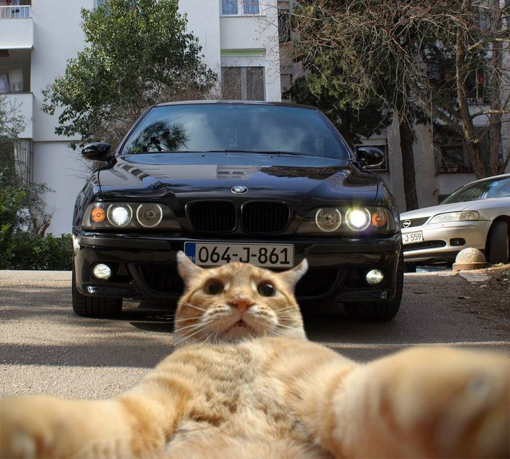
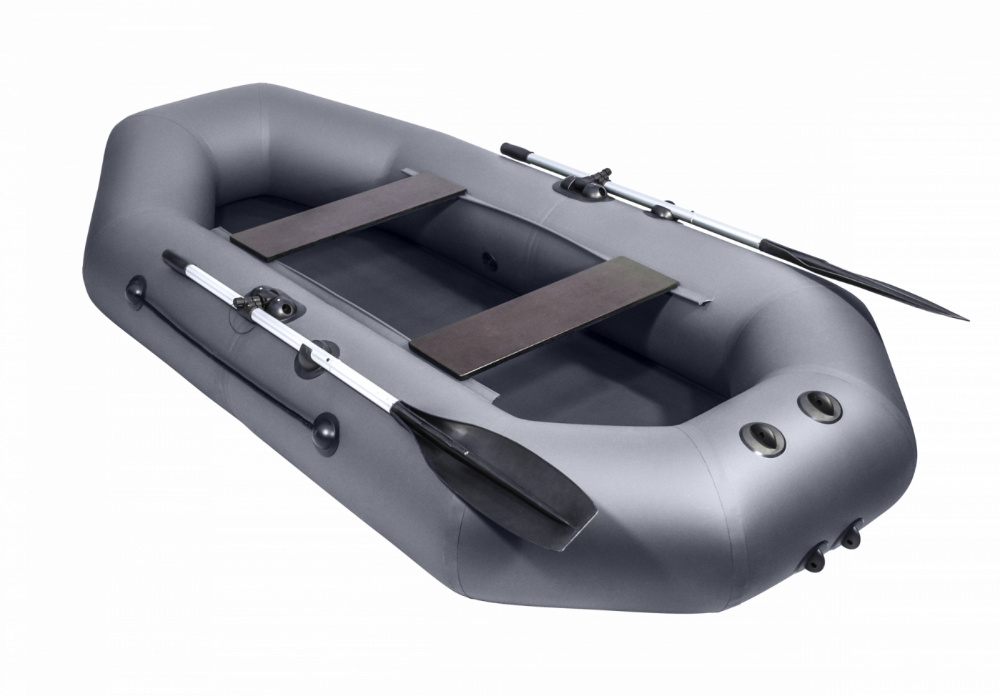
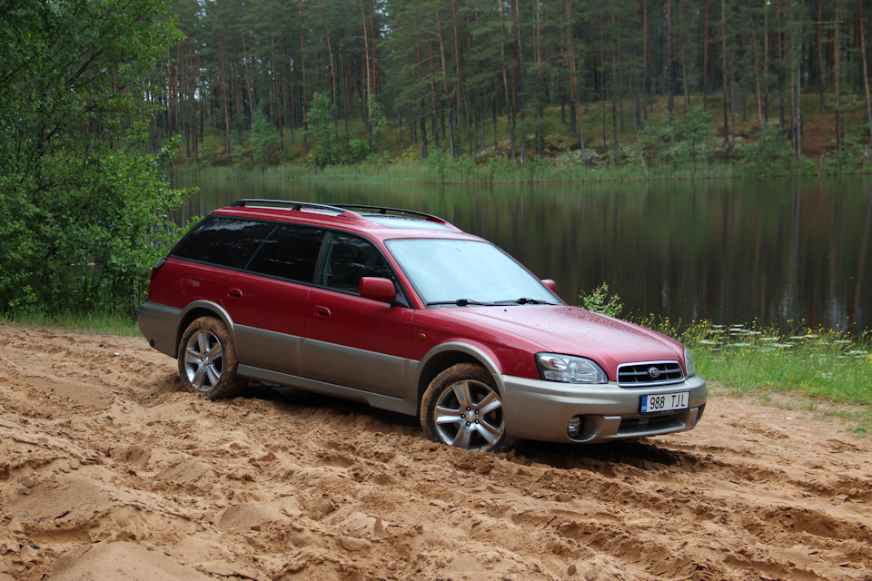
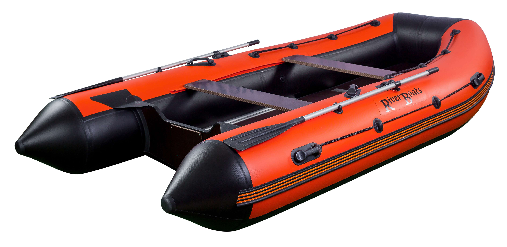
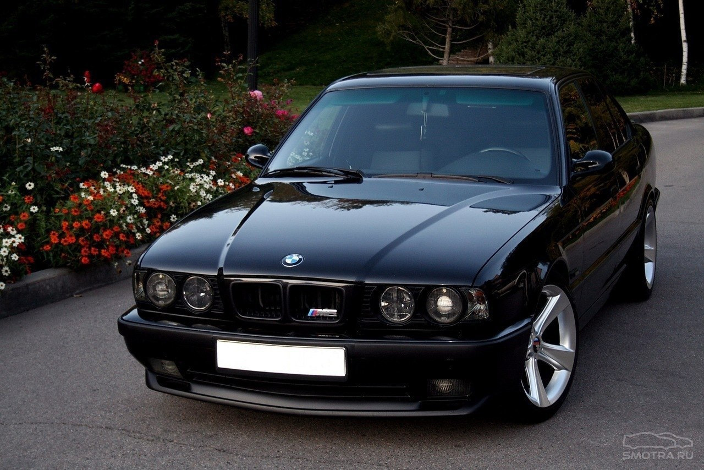

Котики








Flexbox разметка в CSS даёт один из наиболее эффективных способов расстановки, выравнивания и распределения места между элементами внутри контейнера, даже если их размер неизвестен или динамичен (собственно, по этому его и называют flex, от слова flexible, что по-английски имеет двойственное значение — гибкий и уступчивый, что очень сочетается с моделью поведения flexbox). Основной целью flexbox является предоставление возможности изменения своих элементов по ширине и высоте, для того, чтобы они максимально эффективно умещались в доступном месте родительского контейнера, в частности — это удобно в тех случаях, когда нужно соответствовать всем типам дисплеев устройств и размерам экранов. Flex контейнер расширяет вложенные элементы для того, чтобы заполнить доступное пространство или же урезает их, чтобы избежать переполнения.
The Starlit Past
Old Tales Past
On the Vast Earth




